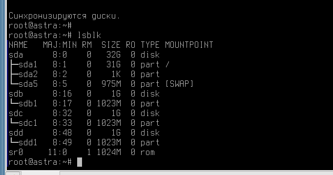

Лабораторная работа №5. Усложнённый материал по итогам видеурока №5.
<---- Обратите внимание на консольный сервер в левой части экрана, вам следует использовать этот сервер для выполнения лабораторной работы
Цель работы
- познакомиться с настройкой служб хранения данных на базе LVM;
- обеспечим доступ к созданным массивам данных через Samba (SMB,CIFS) и NFS.
Оборудование, ПО:
Виртуальная машина под управлением ОС Astra Linux 1.7 в режиме защищенности "Воронеж".
Ход работы:
Мы поговорим о том, как настраивать хранение данных с помощью LVM. Также мы обсудим, как обеспечить доступ к своим файлам через Samba (SMB,CIFS) и NFS.
Начнем с начала, как в Linux в целом работает хранение данных?
Добавляя в систему новый диск (под словом диск, в рамках этой работы мы понимаем любой блочный накопитель - SSD, HDD, NVME), он отображается в системе уникальной буквой.
В Linux диски называются sda, sdb, sdc и так далее в соответствии с схемой именования дисков SCSI/SATA/USB. Буква "sd" означает, что это SCSI/SATA/USB устройство, а буква после "d" обозначает порядковый номер устройства в системе. Так, sda обычно относится к первому SCSI/SATA/USB диску, sdb - ко второму, sdc - к третьему, и т.д.
Стоит обратить внимание, что наименование может отличаться в зависимости от сервера\компьютера\драйверов и специфики аппаратной части!
А что у нас на стендах?
Команда lsblk укажет информацию о всех доступных блочных устройствах. Обратите внимание на sdb, sdc, sdd.

На каждой виртуальной машине есть 3 диска по 1Гб - это тренировочные диски, которые очень пригодятся нам для экспериментов с LVM.
Сам по себе диск не может хранить информации, если не будет создан раздел и не будет установлена файловая система.
Раздел на диске может быть произвольного объема, а также может быть несколько разделов (максимум 4).
Пример разметки диска
Например, разметим /dev/sdb на один единый раздел, объемом на весь диск. Сделать это можно тремя инструментами:
- fdisk;
- cfdisk;
- gparted.
Как это сделать через fdisk, а как через gparted.
А в рамках данной лабораторной работы мы рассмотрим инструмент cfdisk.
Использование cfdisk
Используем команду:
cfdisk /dev/sdbВ качестве метки выбираем GPT.
Размер раздела - 1Гб (или 1023Мб, как выбрано, по умолчанию).
Далее необходимо выбрать тип раздела - Linux LVM.
И в списке доступных разделов и форматов:
И в конце - "Запись".
Подтвердите операцию командой "yes". Проверить, что все работает можно командой:
lsblkПовторите создание раздела для всех дисков.
Отлично, теперь у нас три диска с разделами. Пора поговорить о LVM.
Логические тома (Logical Volumes) в LVM - это виртуальные разделы диска, которые создаются на базе физических дисков. Они могут быть изменены без необходимости переноса данных, в отличие от обычных разделов.
Группы томов (Volume Groups) в LVM объединяют несколько физических дисков или RAID массивов в одну логическую единицу. Группы томов служат для управления большим объемом дискового пространства и деления его на логические тома для удобства управления и обеспечения отказоустойчивости.
Таким образом, логические тома создаются внутри групп томов, что позволяет гибко управлять дисками, изменять их размеры, создавать резервные копии, устанавливать зеркальное отражение данных и многое другое. Использование LVM позволяет эффективно управлять дисками и обеспечивает высокую гибкость и надежность системы хранения данных.
Плюсы и минусы LVM
LVM является удобным и мощным инструментом для управления хранилищем данных в Linux. Вот несколько плюсов и минусов использования LVM:
Плюсы:
- Гибкое управление: с помощью LVM вы можете легко изменять размеры логических разделов, создавать снимки файловой системы, объединять различные устройства хранения в один "пул данных" и многое другое без даунтайма вашего сервера.
- Высокая надежность: использование LVM позволяет создавать резервные копии данных, восстанавливаться после сбоев и улучшить производительность хранилища.
- Возможность разделения на логические тома: это позволяет изолировать данные и при необходимости управлять ими отдельно.
Минусы:
- Сложность настройки: для новичков может быть непросто разобраться во всех возможностях LVM и настроить его правильно.
- Риск потери данных: неправильная конфигурация LVM может привести к потере доступа к данным или их полной потере.
- Дополнительные нагрузки на систему: использование LVM может повлечь за собой дополнительное потребление ресурсов системы и снижение производительности.
С теорией понятно, приступим к практике?
Для работы с LVM помните "трёх китов", на которых держится данная технология:
- Физические тома (Physical Volume)
- Группы томов (Volume Group)
- Логические тома (Logical Volume)
Установка LVM2
Установите lvm2 - набор утилит для работы с технологией:
apt install lvm2Инициализация физического тома
Инициализация физического тома:
pvcreate /dev/sdb1 /dev/sdc1/ /dev/sdd1Проверить состояние физических томов можно командами:
pvsили более подробная
pvdisplayСоздание группы томов
Создать группу томов vg-group:
vgcreate vg-group /dev/sdb1 /dev/sdc1 /dev/sdd1Вместо vg-group, конечно, можно написать другое имя желаемой группы томов.
Проверить состояние группы томов можно командами:
vgsили более подробная
vgdisplayСоздание логического тома
Создать логический том можно командами:
Но перед началом, давайте посмотрим справку по команде lvcreate:
lvcreate --helpСправка - огромная! Всю информацию в рамках нашей лабораторной работы изучить будет нереально. Рассмотрим две команды для создания логического тома.
Например, команда ниже создаст логический том объемом в 350 Мб:
lvcreate -L 350m -n Data vg-groupДругая команда, создаст логический том в размере 40% от всего свободного пространства нашей группы томов:
lvcreate -l 40%FREE -n Storage vg-groupПосмотреть статус логических томов:
lvsИли более подробный
lvdisplayУстановка файловой системы
Теперь можно на LVM хранить информацию? Нет! А как же без файловой системы?
Команда mkfs в Linux используется для создания файловых систем на различных устройствах хранения данных, таких как жесткие диски, флэш-накопители и т. д. Скрипты mkfs позволяют автоматизировать этот процесс, делая его более удобным и эффективным.
Многие администраторы систем используют скрипты mkfs для создания файловых систем с определенными параметрами и настройками. Например, скрипт mkfs.ext4 создаст файловую систему ext4 с выбранными опциями, такими как размер индексов, дополнительные параметры целостности данных и т. д.
Для установки ФС на логический том Data, команда будет:
mkfs.ext4 /dev/mapper/vg--group-DataДля Storage аналогичная. Теперь разделы готовы к работе!
Создайте каталоги /storage и /data, примонтируйте логические LVM-тома в созданные директории.
А теперь поговорим о создании доступа до этих каталогов?
Samba и NFS - это два популярных протокола для совместного использования файлов и ресурсов в сетях с использованием Linux.
Samba:
- Samba - это протокол для обмена файлами и ресурсами между устройствами в сети, поддерживающий работу с Windows и Linux.
- С помощью Samba вы можете создавать общие папки и принтеры, управлять пользователями и группами доступа, а также обеспечивать доступ к файлам и папкам по сети через протоколы SMB/CIFS.
- Samba позволяет взаимодействовать между компьютерами с различными операционными системами, обеспечивая совместимость и удобство использования общих ресурсов.
NFS:
- NFS (Network File System) - это протокол для удаленного доступа к файловой системе через сеть, который широко используется в UNIX-подобных системах, включая Linux.
- С помощью NFS вы можете монтировать удаленные каталоги как локальные на своем компьютере, обеспечивая доступ к файлам и данным на удаленных серверах.
- NFS обладает высокой производительностью и эффективностью, и интегрируется непосредственно в файловую систему операционной системы, что упрощает работу с удаленными данными.
Кратко говоря, Samba обеспечивает совместимость с Windows и Linux, позволяя обмениваться файлами и ресурсами между ними, в то время как NFS предоставляет удаленный доступ к файлам на сервере по сети в UNIX-подобных системах. Оба протокола могут быть полезны в среде Linux для обеспечения совместного доступа к данным и ресурсам.
Начнем с Samba.
- Установите пакет samba на вашем сервере (если он еще не установлен):
- Отредактируйте файл конфигурации smb.conf. Добавьте в него настройки для создания общей папки:
- Внутри файла smb.conf добавьте следующий блок конфигурации (достаточно указать его в конце файла) для создания общей папки:
[shared_folder]- это имя общей папки, которое будет отображаться для пользователей.path- это путь к каталогу на сервере, который будет общим, укажите LVM-массив "Storage".writable = yes- разрешает пользователям запись в общую папку.guest ok = yes- разрешает гостевой доступ, без необходимости аутентификации.- Да, начнем с простой общей папки без авторизации. После выполнения настроек выше, не забудьте перезагрузить службу Samba:
sudo apt install samba/etc/samba/smb.conf
[shared_folder]
path = /storage
writable = yes
guest ok = yes
Где:
sudo systemctl restart smbdА как проверить?
Откройте проводник FLY, в адресной строке укажите smb://127.0.0.1.
Ваша папка готова к работе.
Хочу авторизацию, чтобы безопасно было!
Для этого надо создать локального пользователя, а затем добавить его в Samba.
- Создаем локально:
- Добавляем в Samba:
- В конфигурационный файл
/etc/samba/smb.confдобавьте: - Перезагрузите Samba:
adduser samba-userКстати, пароль для пользователя в самой ОС и его пароль в Samba может отличаться.
[sambashare]
path = /data
valid users = samba-user
writeable = yes
browseable = yes
create mask = 0777
directory mask = 0777
sudo systemctl restart smbdПроверить получится через командную строку
smbclient \\\\127.0.0.1\\sambashare -U samba-userДля анонимного доступа команда была бы:
smbclient -N \\\\hostname\\shareА что там про NFS?
- Для начала установим:
- Далее создайте каталог, который планируется к публикации в NFS.
- Перейдем в основной конфигурационный файл настроек NFS -
/etc/exports. Добавьте там строку: /nfs: Это путь к общей папке на сервере, к которой будет осуществляться доступ по протоколу NFS.*: Это определяет список IP-адресов или доменов, которые имеют доступ к общей папке. Символ*означает, что доступ разрешен для всех IP-адресов (любого клиента).rw: Этот флаг обозначает, что общая папка доступна для чтения и записи (read-write).sync: Этот флаг указывает, что изменения данных должны быть синхронизированы на диск немедленно. Это повышает надежность, но может замедлить работу системы.no_subtree_check: Этот флаг отключает проверку поддерева (subtree check), что позволяет упростить настройку и снизить нагрузку на сервер.- После внесения изменений в файл
/etc/exports, необходимо перезапустить службу NFS, чтобы изменения вступили в силу: - Пора проверить!
sudo apt-get install nfs-server nfs-commonС целью закрепления материала по LVM, создайте логический том объемом в 100 Мб и смонтируйте его в каталог /nfs.
/nfs *(rw,sync,no_subtree_check)Эти строки в файле конфигурации /etc/exports определяют правила доступа к общей папке NFS (Network File System) на сервере. Давайте рассмотрим каждый флаг:
systemctl restart nfs-serverДля начала создадим точку монтирования удаленной общей папки:
mkdir /mnt/nfsА затем примонтируем удаленный ресурс:
sudo mount -t nfs 127.0.0.1:/nfs /mnt/nfsОбщая папка успешно смонтирована:
Практическая работа
- На созданном LVM-массиве создайте логический том:
ShareFolder, объемом в 20% от всего доступного пространства;- В качестве файловой системы используйте XFS;
- В качестве точки монтирования -
/mnt/share. - Создайте Samba папку:
- Скройте папку из Browseable;
- На рабочем столе пользователя Lihanov создайте ярлык для доступа к этому общему ресурсу.